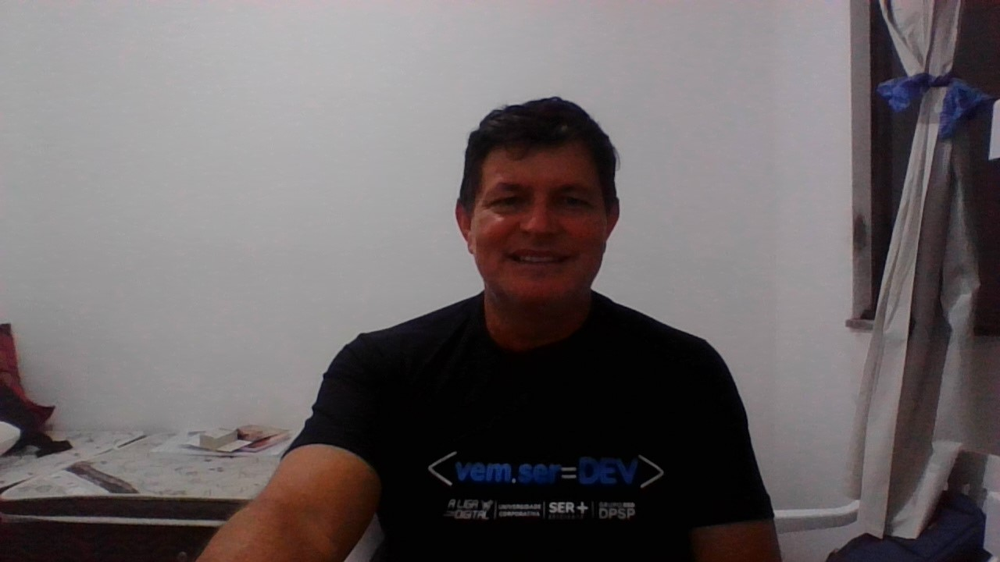

Curriculum Vitae
Luís Carlos Amaral
53 Anos
Juiz de Fora - MG

Formação
Curso superior em ciências geográficas - UFPE (2010)
Curso de extensão em geoprocessamento de dados em sáude - Sec Sau Gov GO (2015)
Curso de sensoriamento remoto - GIGE - BSA (2017)
Curso de extensão de metodologias ativas - (2019)
Curso de Desenvolvedor de sistema - Universidade Cooperativa e Liga Digital (2022) - Aluno
Experiências
Instrutor de curso de formação de militares das forças armadas - EB (1990 - 2018)
Coordenador de ações cívicas em apoio as calamidades públicas - EB
Coordenador de lógistica para operações de transporte e suprimento para áreas fronteristas
Coordenador e operador de sistemas satelitais de apoio as comunicações em logisticas em áreas remotas
Professor e Coordenador de geografia no colégio militar - CMJF (2018 - 2021)
Experiências
Atuar como Desenvolvedor de sistema e Web designer
Projetar softwares para ensino das ciências geográfias
Desenvolver sistemas para as áreas da saúde pública e privada
Integrar-se em grupos colaborativos no desenvolvimento de sistemas para a educação e saúde
Contatos
(32) xxxx - 9181